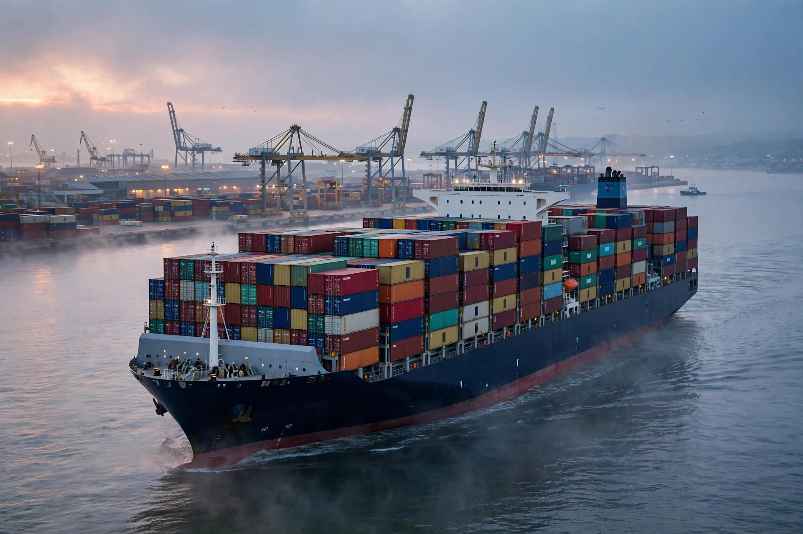

From Wikipedia, the free encyclopedia
| Ship | |
|---|---|
| Definition | Large watercraft for transport on water |
| Propulsion (history) | Sails, steam, diesel, nuclear |

A ship is a large vessel that travels on water, carrying passengers or cargo across oceans, seas and lakes. From ancient reed boats and the dhows that served Byzantium-era trades to Viking longships, clippers, steamships and today's mega container ships, ships moved most of world trade — still true by volume today.
Containerisation from the 1950s revolutionised logistics; the largest ships exceed 400 metres. Shipping faces decarbonisation pressure (see Fossil fuel and wind-assist revivals), piracy and chokepoint risks at Suez, Panama and Malacca. Navies project power with aircraft carriers, the largest warships ever built.